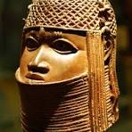
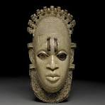

Welcome
Welcome to the Benin Digital Art Museum — a space dedicated to celebrating the artistry, history, and legacy of Benin sculptures. This online experience invites you to explore one of Africa’s richest artistic traditions through a digital lens.
The Legacy of Benin Art
The Kingdom of Benin (modern-day Nigeria) was home to a vibrant culture of metalwork, especially Art casting. From the 13th century onward, Benin artisans developed an extraordinary tradition of lost-wax Art sculpture, creating regal plaques, commemorative heads, and ritual figures that celebrated kingship, history, and spirituality.
“The Benin Arts are more than artifacts — they are voices of a living past.”
The Arts were primarily created for the royal court and placed in the Oba’s palace to narrate history and honor ancestors. The level of detail and craftsmanship has been admired by art historians and collectors worldwide.
Why a Digital Museum?
This project blends technology and heritage to make cultural artifacts accessible to all. It reflects my passion for digital humanities and my commitment to preserving and sharing African history through digital platforms. In a world where physical access is often limited, digital spaces help us remember, learn, and engage.
Visual Highlights

